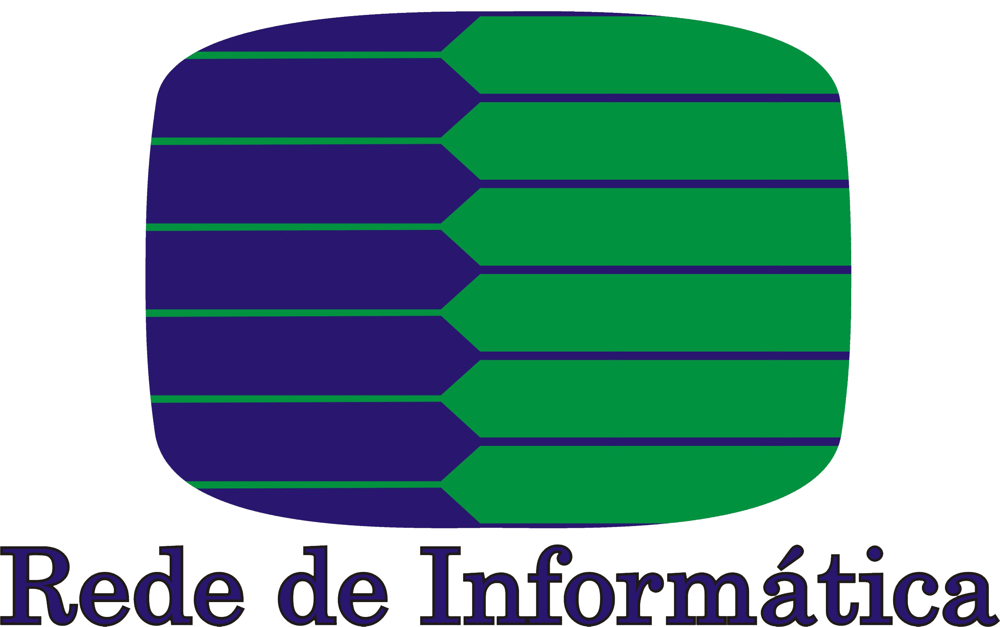

<!--doctype html> 
<!--html lang="en">
<head>
<meta charset="utf-8">
 
  <title>Belém 9-10 November 2012 - Rails Girls</title>
  <meta name="description" content="Rails Girls goes Belém: 9-10.11.2012, join the two-day crash-course to the exciting world of building web applications with Ruby on Rails.">
  <meta name="author" content="Rails Girls">
 
  <link rel="shortcut icon" href="/favicon.png">
  <link rel="apple-touch-icon" href="/apple-touch-icon.png">
 
  <link rel="stylesheet" href="./css/style.css">
  
  <script type="text/javascript" src="https://ajax.googleapis.com/ajax/libs/jquery/1.4.4/jquery.min.js"></script>
  <script type="text/javascript" src="main.js"></script>
  <script type="text/javascript" src="https://apis.google.com/js/plusone.js"></script> 
  <script type="text/javascript" src="//use.typekit.net/nbs6fzt.js"></script>
  <script type="text/javascript">try{Typekit.load();}catch(e){}</script> 
  
	<meta property="og:image" content="http://railsgirls.com/images/railsgirls-sq.png"/>
      <!--[if lt IE 9]>
      <script src="//html5shim.googlecode.com/svn/trunk/html5.js"></script>
      <![endif]-->
    <!--/head>
    <body>

        <header>
        <div class="container_12">
            <a id="logo" href="/"></a>
            <nav>
                <a href="./events.html">Events</a>
                <a href="./materials.html">Materials</a>
                <a href="./press.html">Press</a>
                <a href="http://blog.railsgirls.com">Blog</a>  
            </nav>
        </div>
        </header>
  
    <div id="container" class="container_12 page clearfix">
      <div class="grid_12 omega alpha">
        <div id="promo" class="belem">
    		
        <h1>Rails Girls Belém 9-10 November 2012</h1>
        <p>Rails Girls Belém 9-10 Novembro 2012<br />
	  Olá meninas!<br />
            Estamos felizes em anunciar que Belém irá sediar a quarta edição do Rails
            Girls no Brasil! É um curso gratuito de dois dias, que irá lhe abrir
            as portas para o excitante mundo da programação web, com Ruby on Rails. Não é
        necessário nenhum conhecimento prévio em T.I. <br /><a>INSCRIÇÕES ENCERRADAS!</a> </p>
            
<p>
        </p>
          <div id="share">

            <div>

            <div style="margin:0 15px 0 0;">
              <a href="http://twitter.com/share" class="twitter-share-button" data-url="" data-text="Rails Girls Belém in November 9-10th - apply now!" data-count="horizontal" data-via="railsgirls" data-related="railsgirls">
            Tweet</a>
              <script type="text/javascript" src="http://platform.twitter.com/widgets.js"></script>
            </div>

            <div id="fb-root" style=""></div>
            <script src="http://connect.facebook.net/en_US/all.js#appId=156007477805811&amp;xfbml=1"></script>
            <fb:like href="" layout="button_count" send="true" width="160" show_faces="false" font=""></fb:like>

          </div>
        </p>
        </div>
      </div>
      <div class="grid_4 alpha feature">
       <p><strong>Rails Girls</strong> dá ferramentas para garotas e mulheres construírem os seus sonhos e idéias.</p>
      </div>
      <div class="grid_4 feature">
        <p><strong>Você vai aprender</strong> sobre design e linguagem de programação com a ajuda dos nossos coaches.</p>
      </div>
      <div class="grid_4 omega feature">
        <p><strong>Quer Ajudar?</strong> Estamos procurando voluntários, patrocinadores e Rails coaches <a href="mailto:railsgirlsbelem@gmail.com">Email</a>.</p>
      
      </div>
  
        <hr />          
        
 	 <div class="grid_6 alpha">
				        <h2>Dia 1: 9 de Novembro</h2>
				        <table id="schedule">
				          <tbody>
				            <tr>
				                <th>19:00 </th>
				              <td>
				                <h4>Introdução ao Rails Girls</h4> 
                                Raquel Ohashi, <a href="http://twitter.com/RaquelOhashi">@RaquelOhashi</a> <br />
                                Apresentação da equipe de organização do evento e Coaches.
                                
				              </td>
				            </tr>
					    <tr>
				                <th>19:15 </th>
				              <td>
				                <h4>Mulheres na Área de Tecnologia</h4>
                                Lilian Dias, OnHands<br />
<a href="http://twitter.com/lilian_dias">@lilian_dias</a> 
				              </td>
				            </tr>
					    <tr>
				                <th>19:30 </th>
				              <td>
				                <h4>Festa de Instalação</h4>
						Conheça melhor os coaches, as organizadoras e as participantes!. Traga o seu laptop para instalarmos
                    o Ruby on Rails para você.
				              </td>
				            </tr>
					    <tr>
				                <th>21:00 </th>
				              <td>
				                <h4>Lanche pra comemorar</h4>
						Serviremos um lanche pra comemorar nossa festa de instalação! Não falte!
				              </td>
				            </tr>

				          </tbody>
				        </table>

				        <hr />          

				        <h2>Dia 2: 10 de Novembro</h2>

				           Durante a manhã vamos instalar o Ruby on Rails no seu computador, se você teve algum problema antes.

				                       Faça a sua primeira aplicação web. Faremos exercícios e vamos por a mão na massa no código.
					  <table id="schedule">
					  <tbody>
					  <tr>
					  <th>9:00</th>
					  <td>
					    <h4>Confirmação do seu cadastro & Café da Manhã</h4>
                        
					  </td>
					  </tr>
					  <tr>
					  <th>10:00</th>
					  <td>
					      <h4>Boas-vindas & Introdução ao Rails</h4>
					      Raquel Ohashi, <a href="http://twitter.com/RaquelOhashi">@RaquelOhashi</a><br />
					      Rafaela Cavalcante, <a href="http://twitter.com/RafaellaDesign">@RafaellaDesign</a>
					  </td>
					  </tr>
					  <tr>
					  <th>10:10</th>
					  <td>
					      <h4>Participação especial:</h4>
					      Natalie Volk, ThoughtWorks<br />
					      <a href=˜http://twitter.com/nattivolk˜>@NattiVolk</a><br />
					      Um pequeno vídeo ou skype ao vivo com a representante do Rails Girls no Brasil!
					  </td>
					  </tr>
					  <tr>
					  <th>10:20</th>
					  <td>
					      <h4>Palestrante: Luiz Sanches</h4>
					      Definição sobre Ruby on Rails! Preste bastante atenção porque é muito importante!
					  </td>
					  </tr>
					  <tr>
					  <th>10:40</th>
					  <td>
					      <h4>Workshop</h4>
					      Programar com os coaches! Tire suas dúvidas com eles!
					      Formaremos pequenos grupos para cada coach!
					  </td>
					  </tr>
					  <tr>
					  <th>13:00</th>
					  <td>
					      <h4>Almoço</h4>
					  </td>
					  </tr>
					  <tr>
					  <th>14:00</th>
					  <td>
					      <h4>Workshop</h4>
					      Programar com os coaches! Tire suas dúvidas com eles!
					      Os mesmos grupos formados anteriormente permanecem!
					  </td>
					  </tr>
					  <tr>
					  <th>17:30</th>
					  <td>
					      <h4>Apresentação das Aplicações</h4>
					      Mostre-nos o que você desenvolveu! 
					  </td>
					  </tr>
					  <tr>
					  <th>18:00</th>
					  <td>
					      <h4>Açaí Chat</h4>
					      Bate-papo sobre o que rolou no evento.
					      Queremos saber sua opinião!
					  </td>
					  </tr>
					  <tr>
					  <th>19:00</th>
					  <td>
					    <h4>Distribuição e sorteio de brindes pra vocês, meninas!</h4>
					  </td>
					  </tr>
					  <tr>
					  <th>19:15</th>
					  <td>
					      <h4>After Drinks</h4>
					      Se você quiser nos acompanhar, iremos nos reunir para comemorar o evento,
					      você será bem-vinda e poderá conhecer melhor e interagir com a equipe do evento!
					  </td>
					  </tr>
					  </tbody>
					  </table>

				      </div>
			
				
      <div class="grid_5 push_1 omega side">
       
        
        <h3>Informações</h3>
            <p>
              <p>
                <strong>Confirmação sobre sua Inscrição:</strong> 3 de Novembro</p>
          <strong>Local:</strong> Centro Universitário do Pará - FabSoft <br/>
          <a href="http://goo.gl/maps/cu13G" target="_blank">Av. Governador José Malcher, 1963
		Belém, Pará, Brasil</a>
                  </br>
				A Fabsoft é a Fábrica de Software do Centro Universitário do Pará e possui laboratórios e sala de reunião.
                  
            </p>
            
            <h3>O que eles estão falando sobre nós?</h3>
          <p>Nada ainda - mas cheque nossa <a href="http://www.railsgirls.com/press">página de imprensa</a> para mais atualizações!</p> 
                
                
                

       <h3>Parceiros</h3>
      <p>Rails Girls Belém está sendo organizado com parceiros muito bons!</p>
        
	     <p>Quer ajudar? Estamos procurando por parceiros e patrocinadores! Mande-nos um e-mail para railsgirlsbelem (at) gmail.com. <br/>
	
          <p>
            <a href="http://www.fabsoft.cesupa.br/" style="border:0;">
              
                 </a><br /><br />
            <a href="http://tasafo.org/" style="border:0;">
              
            </a><br /><br />
            <a href="http://www.ebi.com.br/" style="border:0;">
             
            </a><br /><br />
	    <a href="http://www.redeinformatica.com.br/" style="border:0;">
             
            </a><br /><br />
            <a href="http://www.virtuallink.com.br/" style="border:0;">
             
            </a><br /><br />
	    <a href="http://codeschool.com/" style="border:0;">
              
            </a><br /><br />
            <a href="http://www.thoughtworks.com" style="border:0;">
              
            </a><br /><br />
            <a href="http://www.jambu.com.br/" style="border:0;">
              
            </a>
          </p>

          </p>
      
  
  
     <hr/>
     <h3>FAQ</h3>
          <p><strong>O evento será todo em inglês?</strong> Não! A maioria do evento será feito em português e
          os treinadores serão todos brasileiros. No entanto, parte dos materiais e
          palestras motivacionais poderão estar em inglês.</p>
          
          <p><strong>Quanto custa o evento?</strong>
          Nada, é de graça! Você só precisa ser curiosa!
          </p>

          <p><strong> Qual é o publico alvo?</strong>
          Mulheres de qualquer idade que tenham um conhecimento básico em lidar com computadores. Já tivemos participantes de todas as idades. Por favor, traga seu notebook.</p>
	 </p>
          <p>
          <strong>
              Homens podem participar?</strong>
          Sim, mas devem vir acompanhados de uma mulher que
          esteja interessada. Será dada prioridade as mulheres.
          </p>

          <p><strong>Eu sei programar! Como posso ajudar?</strong> Estamos procurando por treinadores. Nós
          teremos um workshop de 3 horas uma semana antes do evento para explicar como será passado o currículo. Nos envie um <a href="mailto:railsgirlsbelem@gmail.com">email</a>!
          </p>
      
        
      </div>
      
      <div class="coaches">
        <hr />
        <h2>Belém team</h2>
	
         <a href="https://twitter.com/RaquelOhashi" class="grid_3">
        Raquel Ohashi, organizer
        <small>@RaquelOhashi</small>
        </a>
	 <a href="https://twitter.com/RafaellaDesign" class="grid_3">
        Rafaella Cavalcante, organizer
	 <small>@RafaellaDesign</small>
          </a>
          <a  href="https://twitter.com/LourdileneSouza" class="grid_3">
              Lourdilene Souza, organizer
	  <small>@LourdileneSouza</small>
          </a>  
          </a> 
	  <a href="https://twitter.com/Manuely_Guedes" class="grid_3">
              Manu Guedes, organizer
	  <small>@Manuely_Guedes</small>
          </a>
	  <a href="https://twitter.com/ElenArantza" class="grid_3">
              Elen Arantza, organizer
	  <small>@ElenArantza</small>
          </a>
	  <a href="https://twitter.com/CliviaLorena" class="grid_3">
              Clívia Lorena, organizer
              <small>@CliviaLorena</small>
	  </a>
    <a href="https://twitter.com/luizsanxes" class="grid_3">
              Luiz Sanches, coach
	  <small>@luizsanxes</small>
          </a>
          <a href="https://twitter.com/mfandrade" class="grid_3">
              Marcelo Andrade, coach
              <small>@mfandrade</small>
          </a>
		<a href="https://twitter.com/paulociecomp" class="grid_3">
              Paulo Moura, coach
              <small>@paulociecomp</small>
          </a>
	  <a href="https://twitter.com/andremrsantos" class="grid_3">
              André Santos, coach
              <small>@andremrsantos</small>
          </a>
	  <a href="https://twitter.com/geraldosequeira" class="grid_3">
              Geraldo Sequeira, coach
              <small>@geraldosequeira</small>
          </a>
	  <a href="https://twitter.com/adalbertorsilva" class="grid_3">
              Adalberto Júnior, coach
              <small>@adalbertorsilva</small>
          </a>
	  <a href="https://twitter.com/glendonml" class="grid_3">
              Glendon Leitão, coach
              <small>@glendonml</small>
          </a>
	  <a href="https://twitter.com/victox" class="grid_3">
              Victor Espíndola, coach
              <small>@victox</small>
          </a>
	  <a href="https://twitter.com/angeloassis" class="grid_3">
              Angelo Assis, coach
              <small>@angeloassis</small>
          </a>
	  <a href="https://twitter.com/jhoeymarques" class="grid_3">
              Joel Marques, coach
              <small>@jhoeymarques</small>
          </a>
 
      </div>
      
    </div>
    </div>
      
    <!-- /content -->
    
    <!--footer>
        <p>2010-2015, Rails Girls. <a href="./press.html">Contact us</a> or follow us on <a href="http://twitter.com/railsgirls">Twitter</a> and <a href="https://www.facebook.com/railsgirls">Facebook</a></p>
        <p class="slogan">Get excited and make things!</p>
    </footer>
      <script type="text/javascript">

        var _gaq = _gaq || [];
        _gaq.push(['_setAccount', 'UA-19631067-1']);
        _gaq.push(['_trackPageview']);

        (function() {
          var ga = document.createElement('script'); ga.type = 'text/javascript'; ga.async = true;
          ga.src = ('https:' == document.location.protocol ? 'https://ssl' : 'http://www') + '.google-analytics.com/ga.js';
          var s = document.getElementsByTagName('script')[0]; s.parentNode.insertBefore(ga, s);
        })();

      </script>
    </body>
    </html-->
